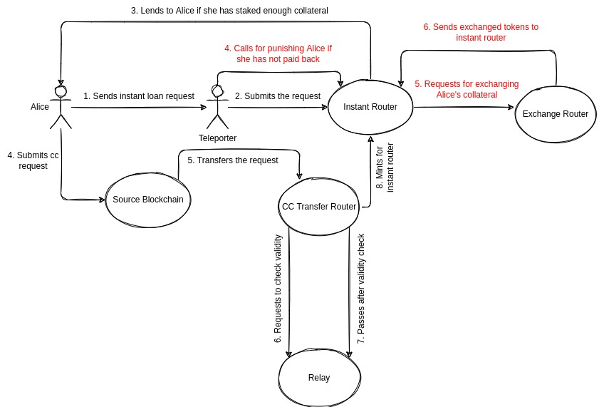
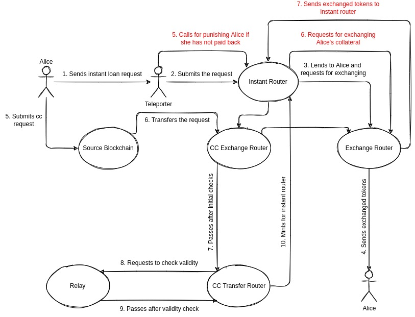

Instant CC Settlement
Introduction#
Suppose that Alice has some amount of token A on the source chain. Alice can make an instant cross-chain settlement request to transfer her assets to the target chain, or exchange her assets on the target chain. For her request to be executed on the target chain, Alice needs to stake enough TDT on the target chain.
Instant Cross-Chain Transfer#

To perform an instant cross-chain transfer, Alice sends a signed instant loan request to teleporters. In the request, Alice determines the requested amount and the recipient's address. A teleporter submits this request on the target chain. The smart contract checks the validity of the request's signature and makes sure it belongs to Alice. Then, the smart contract checks whether Alice has enough collateral to get the requested amount or not. If Alice has already staked enough collateral, the instant pool of token A sends the requested amount to Alice.
Alice has a limited time to pay the instant loan back. To pay it back, Alice sends her token A along with a lock request on the source chain. After the request gets finalized on the source chain, a teleporter submits the request on the target chain. The smart contract checks that the request has been finalized on the source chain, then, mints wrapped token A for the instant pool to give Alice's loan back. If Alice does not pay back the instant loan in the predetermined time, a teleporter calls the smart contract to punish Alice. The contract slashes the staked TDT of Alice and exchanges them for wrapped token A.
In order to make the protocol safer, instead of staking TDT, users are required to stake AVAX as collateral to be able to perform instant cross-chain settlements. This is to make instant pools more secure while TDT price is volatile in the first phases of development. In the next phases, this requirement might change.
Instant Cross-Chain Exchange#

The instant cross-chain exchange process is similar to instant cross-chain transfer, except that in the instant loan request, Alice also determines exchange-related information such as token B address, the minimum amount of token B that she expects to receive. After lending wrapped token A to Alice from the instant pool of token A, her tokens are exchanged for token B using the liquidity pool of token A and token B, and token B is sent to the recipient address that was determined by Alice. If exchanging was unsuccessful, the loaned wrapped token A is sent to the recipient's address. After that, Alice has limited time to pay back the instant loan. If she does not pay it back in the predetermined time, she will get penalized.
Fees#
The fees for instant cross-chain settlements are the same as fees for normal cross-chain settlements, plus an additional fee for its instant feature. This additional fee is called instant fee. Instant fee is paid to the liquidity providers of the instant pools, who lock their assets to be given as loans to the instant settlement users.
Staking#
As explained above, users need to stake collateral to be able to perform instant cross-chain settlements. This is to make sure that users can pay back the loan they take from the instant pool. In this lending and borrowing system, the amount that users can borrow is limited by the amount they have staked. The smart contract determines the ratio of the collateral to the borrowed amount properly to keep the instant pools safe.